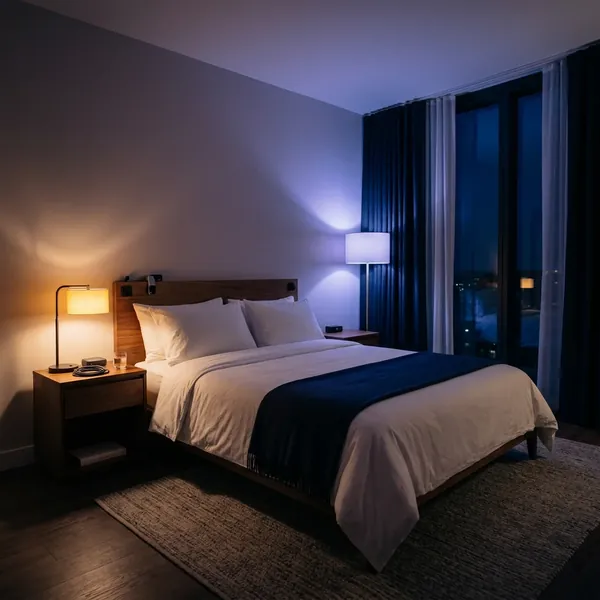
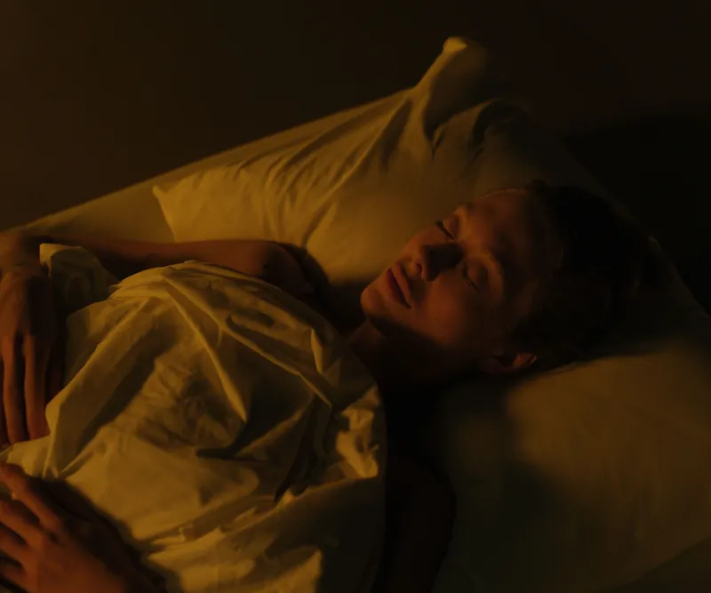
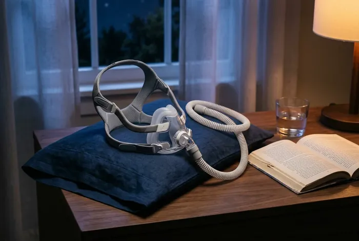
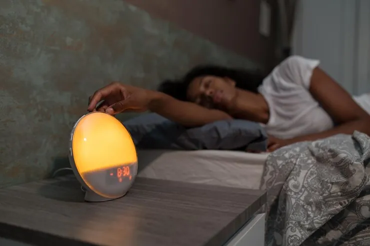
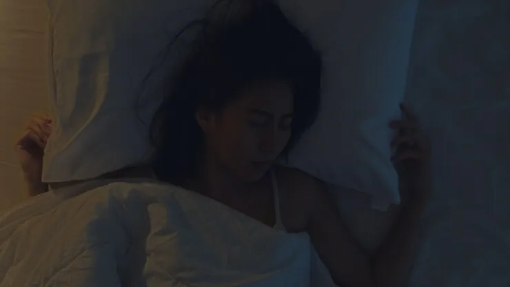
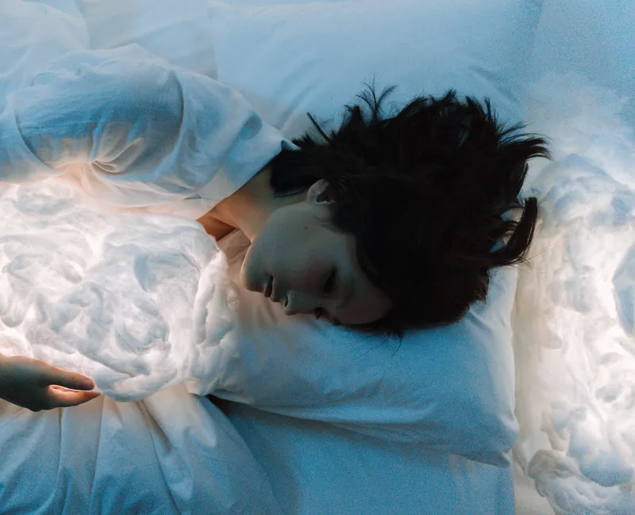

Diagnóstico
Polissonografia
Uma noite numa suíte individual, com 22 sensores discretos e um técnico acordado do outro lado.
Marcar exameMedicina do sono · Batel, Curitiba
Ronco, despertares, cansaço que não passa: a resposta costuma estar no meio da noite. Aqui você dorme numa suíte individual e um técnico acompanha seus sinais até o dia clarear.

23h · os sinais
Se você dorme oito horas e acorda como se tivesse dormido quatro, o problema pode estar no meio da noite, onde ninguém vê. É lá que a gente olha.
00h · tratamentos
Passe o cursor nas janelas para acender a luz.Role a página: cada janela acende quando passa pelo meio da tela.

Uma noite numa suíte individual, com 22 sensores discretos e um técnico acordado do outro lado.
Marcar exame
CPAP, aparelho intraoral ou ajuste de posição, com acompanhamento até a máscara deixar de incomodar.
Marcar avaliaçãoTerapia cognitivo-comportamental em 6 a 8 encontros, a primeira opção antes do remédio.
Marcar avaliação
Plano de luz, cochilos e horários para quem trabalha de madrugada ou vive trocando de fuso.
Marcar avaliação
Sonambulismo, falar dormindo e pesadelos que se repetem, investigados com vídeo durante o exame.
Marcar avaliaçãoNão sabe qual é o seu caso?
02h · plantão
03h · ciclos
O sono anda em ciclos de mais ou menos 90 minutos. Acordar no fim de um ciclo cansa menos do que acordar no meio de um sono profundo.
Deite em um destes horários
Estimativa didática, com 15 minutos para pegar no sono. Quem ronca, acorda muito ou tem sono de dia precisa de avaliação, não de calculadora.
Marcar avaliação04h · a noite aqui

05h · equipe
Neurologista · medicina do sono
Pneumologista · apneia e CPAP
Enfermeira-chefe do plantão noturno
06h30 · manhã
É o que a gente procura no fim do tratamento: uma manhã comum, sem susto e sem soneca.
Marcar avaliação07h · antes de marcar
Não. Se você não tiver, a consulta de avaliação já sai com o pedido e a gente agenda a noite na sequência.
A maioria dorme. Os fios são finos e presos com fita macia; a noite não precisa ser perfeita para o exame valer.
Atendemos particular com nota para reembolso e alguns convênios para o exame. Confirme o seu pelo WhatsApp.
Tem, para casos selecionados de suspeita de apneia. O aparelho vai com você e volta no dia seguinte.
Rua Fictícia da Lua, 214 · Batel · Curitiba
Consultas seg a sex, 9h às 20h · Exames todas as noites